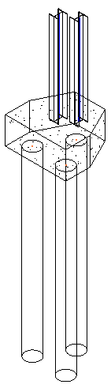

Analytical Support Tolerance
Here is an interesting issue dealing with the analytical model in Revit Structure. As we see below, the issue is not really API related, but since one symptom is the missing data obtainable through the API, it is worth an explanation.
Question: We have created two columns over a three-pile cap foundation and are trying to retrieve the support data from their analytical models:

Unfortunately, the support data of the column is available only if its centre line is exactly over the analytical model location of the pile cap foundation. Else, it is not available and the property simply returns null. The main purpose of this requirement is actually to find the link between the column and the pile cap. How can we achieve this, please?
Answer: Happily, this situation is easily resolved by modifying the analytical support tolerance. First, note that the missing support data is not an API-specific problem. If you select the column through the user interface, the Show Related Warnings button is active and the warning says that the column may not be supported.
The pile cap foundation is actually four foundations – one cap foundation and three pile foundations. Geometry for the cap foundation starts at Level 1 and goes down 900. The geometries for the three pile foundations start at -900 and go down 6900. In Revit, the default position for the Isolated Foundation analytical model is at the top of the geometry. Since this is at -900, the analytical models for the pile foundations are at that elevation.
Analytical Support is governed by the Analytical Support tolerance, shown on the Analytical Model Settings tab of the Structural Settings dialog. In the attached file, this tolerance is set at 300. So even when the column's analytical model is directly over the pile foundation's analytical model, the thickness of the cap foundation (900) is keeping the column from seeing the pile foundation's analytical model.
To overcome this obstacle, increase the tolerance from 300 to 900. Then when you move the column over the top of the pile foundation, it will see the pile foundation, and the column will consider the pile foundation as a valid support.
Although that resolves the current problem, here are two additional general hints for approaches to find the link between two elements located close to each other:
- FindReferencesByDirection.
- Geometric analysis.
The FindReferencesByDirection method to find the link between the two elements determines that the pile cap foundation is located directly underneath the second column and hence is supporting it. This can be achieved by shooting a ray straight down from a point slightly raised up from the lower endpoint of the column and using FindReferencesByDirection to discover the foundation element directly underneath. FindReferencesByDirection returns an array of elements, faces, and references found when moving through the model from a specified point in a specified direction. Its use is demonstrated by the RayTraceBounce SDK sample.
You can also determine their relationship by pure geometric analysis, e.g. using a filter to collect all the structural elements on the relevant levels and then comparing the locations of their solids' faces with each other. The AreSolidsCut method defined by the RoomsRoofs SDK sample may be helpful in this context. Geometric analysis may or may not be simpler than using FindReferencesByDirection.